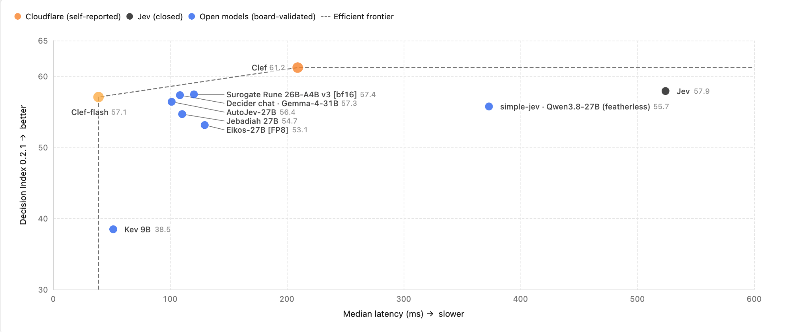
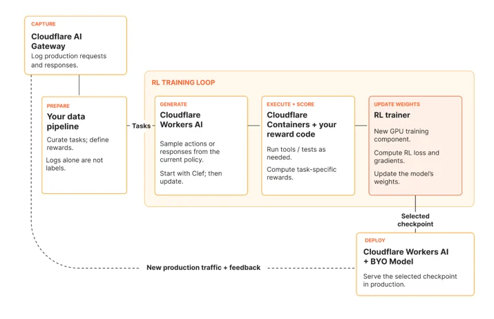

Cloudflare 官方发布文 · Jev Decision Index 完整评测表 · 收录自第 11 章知识库，查看来源与登记信息 ↗
Clef 发布：我们的开源决策模型与全新 RL 微调平台
原文：Introducing Clef: our open-source decision models, and new RL fine-tuning platform · Cloudflare Blog · 发布于 2026-10-01
译文为社区学习用途的非官方中文翻译，版权归原作者 Cloudflare 所有。
Michelle Chen, Alex Reneau, and Kevin Flansburg
（Cloudflare AI 平台团队）
近几周，以 Typesafe AI 的 Jev 等 System One 模型为代表的决策模型引发了广泛讨论。分类器模型其实已经存在了一段时间，而 Jev 为 AI 世界引入了一个全新的决策模型概念——这类模型能够以低成本、高速度、强一致性的方式产出有界的结构化输出，可以嵌入任何需要做出决策的工作流之中。它们的能力足以处理任意一组输入，无需为了纳入新的分类类别而不断重新训练模型。这与大语言模型（LLM）的世界形成了鲜明对比：LLM 在很大程度上是非确定性的，但又足够开放，能够进行推理，并为智能体式工作负载生成文本和工具调用。
今天，我们发布了两个由 Cloudflare 训练的决策模型：Clef 和 Clef-flash，托管在 Workers AI 上。在 Jev Decision Index 评估中，Clef 目前名列第一，完整结果可以在基准测试在线演示站点上查看。这些模型更聪明、更快速，并且完全兼容 Jev API，因此你可以轻松试用这些托管模型。我们还在 Apache 2.0 许可证下将这些模型完整开源到了 Hugging Face，供你在本地运行、自行实验。

最后，我们也很高兴推出全新的强化学习（RL）产品，让客户同样能够微调 Clef 来适配自己的用例。
什么是决策模型？
决策模型基于一定的概率进行分类，帮助智能体决定如何行动。例如，你可以传入一条客户支持消息（输入），询问它是否紧急、应该由哪个团队来处理。决策模型会返回带有概率的类型化答案（输出），你的代码可以据此对工单进行路由、触发升级，或者转交人工处理。这意味着在智能体决策中，人类不再必须全程在场——智能体可以通过程序收集上下文、做出决策、对任务采取行动，并在需要时转交人工。

具体到 Cloudflare，我们的威胁情报团队一直在测试新的 Clef 模型，用它来帮助我们对网站域名进行分类。把一个域名交给 Clef（配合 Browser Run），它就能快速识别该域名所属的类别——例如，它可能判定某域名有 95% 的概率是时尚类网站、85% 是电商、不到 1% 是钓鱼网站，等等。这一次分类中，我们的 Clef 模型抓取、渲染并对该网站进行分类共耗时 2.2 秒；相比之下，我们最快的通用 LLM gpt-oss-120b 在同一工作流中耗时 4.7 秒，而且只返回了两个分类结果。作为使用者，你可以想象延迟减半、结果更优能够如何帮助我们改进威胁情报工作流，更快地识别恶意域名与合法域名。把这个思路推广到任何需要快速程序化决策的用例，你就能解锁强大的智能体式工作流，让它们自主决策、推理并执行。
在乐理中，谱号（clef）是置于五线谱开头的一种符号，用来为谱线与谱间赋予具体的音名。决策模型与谱号颇为相似：它帮助界定上下文所处的领域，以及随后跟随的音符（行动）。我们选择 Clef 作为决策模型家族的名字，正是因为它发挥着相似的作用，而其中的 CF 也让人联想到 Cloudflare。
Clef 与其他决策模型有何不同？
尽管市面上的决策模型正日趋饱和，Clef 仍有一些独特的性质，让我们非常乐于将它公开发布。首先，它带有视觉编码器，能够接收图像并对视觉内容进行分类，这与目前仅支持文本分类的 Jev 不同。其次，我们的模型拥有 64k 上下文窗口（Jev 为 32k），用户可以放入更多的输入状态供模型进行分类。
第三，我们的模型准确而强大，在多项质量基准测试中与其他市售决策模型相比得分颇具竞争力。我们从 Jev Decision Index 定义的对决策至关重要的评估中精选了一部分，并据此为市面上一些较为热门的模型打分。基准测试结果见下表，你也可以在决策指数在线演示站点上查看得分：
| Benchmark | Clef | Clef-flash | Jev | DiffusionGemma Jev | Kev 9B | Laya |
|---|---|---|---|---|---|---|
| BFCL · case exact | 98.47 | 98.76 | 95.75 | 96.52 | 94.51 | 38.13 |
| ToolRet · nDCG@10 | 69.19 | 66.43 | 65.28 | 61.21 | 64.26 | 12.69 |
| API-Bank · accuracy | 91.93 | 93.11 | 88.19 | 83.66 | 56.30 | 11.41 |
| Home appliances · case exact | 82.95 | 97.73 | 52.27 | 42.05 | 25.00 | 0.00 |
| When2Call · accuracy | 72.37 | 65.58 | 80.97 | 75.44 | 49.62 | 11.94 |
| BANKING77 · macro-F1 | 94.20 | 90.93 | 79.74 | 74.28 | 84.83 | 14.29 |
| CLINC150+OOS · macro-F1 | 97.43 | 66.77 | 89.27 | 83.49 | 79.03 | 3.19 |
| BRIGHT · nDCG@10 | 45.91 | 39.26 | 47.52 | 42.94 | 38.53 | 19.90 |
| Amazon ESCI · macro-F1 | 57.48 | 57.39 | 55.21 | 53.37 | 49.22 | 24.40 |
| PhishNChips · accuracy | 79.60 | 75.05 | 62.55 | 85.35 | 50.75 | 50.15 |
我们还在 Typesafe 自己的评估套件上运行了基准测试，我们的 Clef 模型表现出色，在 4 个领域中的 3 个击败了 Jev。尤其值得一提的是，考虑到 Clef-flash 的速度之快，它的表现格外出色。
| Workflow | Clef | Clef-flash | Jev |
|---|---|---|---|
| 发票处理 | 64.7 | 57.1 | 61.8 |
| 客户服务 | 76.3 | 77 | 76.0 |
| 安全事件 | 62.9 | 61.7 | 61.7 |
| 智能体轨迹可观测性 | 68.5 | 69.8 | 71.6 |
在全部 43 项评估基准中，我们的 Clef 模型在延迟上都胜过了其他决策模型（Laya 除外——它非常快，但在上表的基准中牺牲了质量）：
| Benchmark | Clef | Clef-flash | Jev | DiffusionGemma Jev | Kev-9B | Laya |
|---|---|---|---|---|---|---|
| 中位延迟 · 毫秒 | 209.3 | 38.8 | 524.1 | 84.4 | 51.4 | 5.8 |
| p95 延迟 · 毫秒 | 238.6 | 122.4 | 536.0 | 211.2 | 187.9 | 222.5 |
除了模型本身带来的延迟优势，我们的 Clef 模型还托管在 Workers AI 上。由于它们运行在 Cloudflare 的基础设施上，我们得以利用边缘侧的 GPU，从而带来更低的网络延迟和更快的决策。这意味着你可以把 Clef 放进智能体做决策的热路径（hot path），再结合 Workers AI 上的某个 LLM 来采取行动。
curl https://api.cloudflare.com/client/v4/accounts/$CLOUDFLARE_ACCOUNT_ID/ai/run/@cf/cloudflare/clef \\
-X POST \\
-H "Authorization: Bearer $CLOUDFLARE_AUTH_TOKEN" \\
-d '{
"model": "clef",
"state": "Checkout has been failing for every customer for the last hour.",
"questions": {
"urgent": { "type": "noul", "instructions": "Is this support request urgent?" },
"team": {
"type": "choice",
"instructions": "Which team should handle this request?",
"criteria": {
"billing": "Payments, invoices, and refunds",
"technical": "Outages, errors, and configuration",
"sales": "Plans and upgrades"
}
},
"severity": {
"type": "score",
"instructions": "How severe is the customer impact?",
"criteria": ["No impact", "Minor", "Major", "Critical"]
}
}
}'Clef 同样会产出严格类型化的输出，与 Jev 类似且完全 API 兼容，因此你可以非常轻松地完成替换。更大的 Clef 模型是你追求精度的强力选择，而 Clef-Flash 模型则非常适合对延迟敏感的决策场景。这些模型达到企业级可用标准，我们承诺不会读取、存储你的请求或响应，也不会用它们来训练（除非你愿意使用我们的微调产品，下文会详细介绍）。你现在就可以上手 Clef 模型：从我们的开发者文档开始，或者到 Hugging Face 仓库体验开源模型。
如果你希望在特定工作负载上调优 Clef 时获得帮助，我们也提供微调服务——初期由我们的前置部署工程师（FDE）团队提供贴身的合作支持，后续则会推出自助式微调平台，供客户自行训练模型并重新部署到 Cloudflare。
我们如何训练 Clef
就在 Jev 发布的同一周，我们发文介绍过基于自研决策模型开展的一些实验。我们的演示展示了如何改造 DiffusionGemma 模型：通过暴露大语言模型生成的 logprobs，让它输出确定性的概率。我们最初的方法建立在 Matt Mastracci 的独立研究之上——他一直活跃于机器学习（ML）社区，乐于分享新想法，并向 vLLM 推理引擎提交pull request，让 DiffusionGemma 的支持更加完善。
Clef 延续了这一概念，但采用了不同的基础模型作为骨干。我们目前使用 Qwen 作为基础模型，并对其进行后训练，以适配决策模型的用例。推理时，Clef 先用 Qwen 完成一次仅预填充（prefill-only）的前向计算，然后并行地对所有合法的 schema 选项打分。决策步骤是非自回归的，因而不存在需要逐 token 生成的中间文本，这让 Clef 比自回归 LLM 快得多。Clef 和 Clef-flash 并不通过生成中间文本来产生结构化答案，而是直接从骨干模型的内部表示中推导 schema 选项。这一方法依赖一个专门的两阶段注意力路由过程：每个合法选项先提取与提示词相关的上下文，使各个字段的参数既能与其他字段进行交叉注意力计算，也能在打分前回看原始载荷（payload）。借助词法先验（lexical prior），模型得以在不同选项之间保持语义意图。最终，这套架构将选项级证据路由、跨字段联合注意力与受 schema 约束的打分融为一体。
我们冻结了 Clef 所用的 Qwen3.8-27B 与 Clef-flash 所用的 Qwen3.5-9B，同时联合优化路由头和 rank-256 低秩适配器。后训练阶段对合法 schema 输出采用标签平滑交叉熵，并配合 Brier 损失来精调概率校准。训练使用了我们自建的内部合成数据集，其中对字段顺序、提示词和 schema 结构做了排列组合。我们还开发了面向校准决策的强化学习（Reinforcement Learning for Calibrated Decisions，RLCD）作为次要优化目标：对相邻的有序选项给予部分得分，奖励完全精确的记录输出，并施加参考惩罚以防止分布偏移，从而获得更好的准确率与泛化能力。
这意味着我们在 Clef 上实现了几项新颖的成果：提升了模型分类的准确率，将其约束为只输出概率而非生成文本，并且让它比 Jev 和基础 Qwen 模型都更快。
微调如何扩展 Clef 的能力
在 Cloudflare 内部，我们听到了许多需要微调 Clef 模型、并将其嵌入智能体式工作流的用例。例如，内部团队希望有一个分类器模型来评估信任与安全（Trust & Safety）提交、帮助我们分诊 Cloudflare 支持请求，甚至内置到我们的 Bot 产品中，判断某个爬虫是 good bot（善意爬虫）还是 bad bot（恶意爬虫）。
这些用例极其具体，而我们多年来积累了大量带标注的决策数据，足以用来训练特定的分类器。微调模型时，你可能要放弃一些通用性能，以换取在特定领域内更高的准确率。由于 Cloudflare 拥有覆盖多个领域、超过 15 年的网络数据，我们可以微调出适配这些具体用例的模型，比通用的 Clef 模型更准确、更快速。我们已经在与内部团队合作，探索如何对 Clef 进行后训练，打造强大的 ML 模型，从而扩大我们的影响力并改进整个 Cloudflare 的工作流。这些内部团队和用例既是我们新组建的 FDE 微调团队接下来的职责所在，也是我们强化学习（RL）产品的基础。
全新的 RL 服务
我们正在提供一项服务，由亲力亲为的 FDE 团队帮助客户微调 Clef，使其适配客户的工作负载。在此基础上，我们会从这些一手经验中学习，构建一个自助服务平台，让客户能够在 Cloudflare 上完成数据采集、微调与模型重新部署的全流程。
这其实筹划已久——我们一直在构建 AI 平台的各项底层原语，正是为了让自定义 RL 产品的构建成为可能。Jev 引发的关注表明，市场需要一种快速、小巧、专精的分类器模型，我们选择以此作为切入点，开始试验 RL 环境。
为此，我们利用了 Cloudflare 平台上已经构建好的原语：
Cloudflare AI Gateway——让你的所有 AI 流量都经过 AI Gateway，自动为你的用例创建请求数据集
Cloudflare Workers AI——针对基础 Clef 模型生成 rollout（轨迹采样）
Cloudflare Containers——用于对智能体动作进行打分与回放的 RL 沙箱
[NEW] Trainer——更新微调后 Clef 模型的权重
Cloudflare Workers AI + BYO Model——在 Workers AI 上重新部署微调后的模型
这整合了 AI 平台中几个仍在开发中的组件，包括：捕获你的 AI 流量、让你能够利用自己的请求/响应数据的 AI Gateway；用作 RL 沙箱的 Containers；以及 Workers AI 的自带模型（Bring Your Own Model，Cog）工作——这项工作自我们收购 Replicate 以来一直在推进。

立即试用
我们很高兴今天能发布 Workers AI 团队的首个由 Cloudflare 训练的 ML 模型。这里仍处于早期阶段，后续还有更多改进在路上，但它是 AI 平台团队辛勤工作的一次精彩首秀。我们相信，Clef 有能力革新我们使用智能体的方式，这与 Cloudflare 成为智能体云（agent cloud）的使命天然契合。
如果你有具体的使用场景，并且已经是这些产品的客户——我们非常乐意与你交流，在这个领域中与你结为设计合作伙伴。
欢迎试用托管在 Workers AI 上的 Clef 模型；如果你想亲自探索，可以下载 Hugging Face 上的权重；如果你有希望我们协助的微调用例，也欢迎联系我们。
我们的 ML 团队影响力与日俱增，从模型优化到模型训练研究皆有建树。如果你有兴趣加入我们的事业，欢迎查看我们的在招职位。